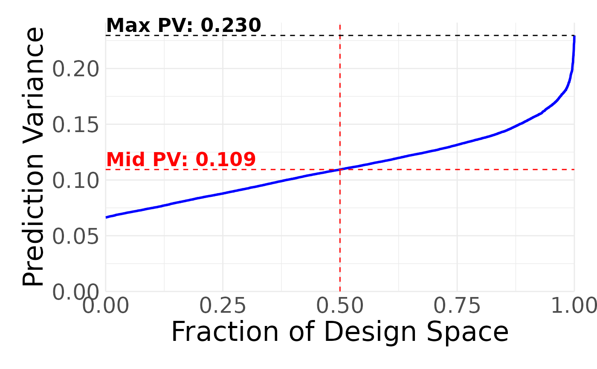

Creates a fraction of design space plot
Usage
plot_fds(
genoutput,
model = NULL,
continuouslength = 1001,
plot = TRUE,
sample_size = 10000,
yaxis_max = NULL,
description = "Fraction of Design Space"
)Arguments
- genoutput
The design, or the output of the power evaluation functions. This can also be a list of several designs, which will result in all of them being plotted in a row (for easy comparison).
- model
Default `NULL`. The model, if `NULL` it defaults to the model used in `eval_design` or `gen_design`.
- continuouslength
Default `11`. The precision of the continuous variables. Decrease for faster (but less precise) plotting.
- plot
Default `TRUE`. Whether to plot the FDS, or just calculate the cumulative distribution function.
- sample_size
Default `10000`. Number of samples to take of the design space.
- yaxis_max
Default `NULL`. Manually set the maximum value of the prediction variance.
- description
Default `Fraction of Design Space`. The description to add to the plot. If a vector and multiple designs passed to genoutput, it will be the description for each plot.
Value
Plots design diagnostics, and invisibly returns the vector of values representing the fraction of design space plot. If multiple designs are passed, this will return a list of all FDS vectors.
Examples
#We can pass either the output of gen_design or eval_design to plot_correlations
#in order to obtain the correlation map. Passing the output of eval_design is useful
#if you want to plot the correlation map from an externally generated design.
#First generate the design:
candidatelist = expand.grid(X1 = c(1, -1), X2 = c(1, -1))
design = gen_design(candidatelist, ~(X1 + X2), 15)
plot_fds(design)
